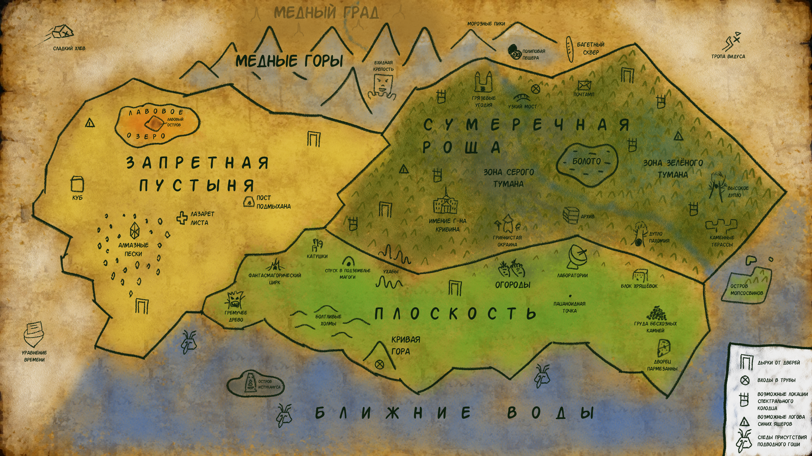

112 персонажей • 17 локаций • 21 предметов • 6 ивентов • 3 организаций • 19 рас
Провансалла
Персонажи · Существо/Человек
Майонезная тётенька
Орлундий
Персонажи · Существо
Вонючий, прослыл странным среди майонезных
${IS_ADMIN ? `
Акакий Куролесов
Существо
Маленький гриб, славный малый
ep.20ep.39ep.47ep.56ep.69
${IS_ADMIN ? `
Алевтина
Существо/Человек
Художница картин, затягивающих своим звучанием
ep.6
${IS_ADMIN ? `
Ароматные голуби
Существа
Рассекают над литолием
${IS_ADMIN ? `
Баба Жуля
Существо
Бабушка-Мопс
ep.2ep.14ep.69
${IS_ADMIN ? `
Баранча
Существо
Один из трёх крепышей
ep.28ep.49ep.51ep.57
${IS_ADMIN ? `
Болотный скрипач
Существо
Играет звуки канифоли в сумеречной роще
ep.20ep.47
${IS_ADMIN ? `
Большой Дима
Существо
Друг Полипов
ep.26
${IS_ADMIN ? `
Борька
Существо
Говорящий мясной хлеб
${IS_ADMIN ? `
Брат Евдокии
Человек
Построил карьеру на Псарне
ep.27
${IS_ADMIN ? `
Братья Мишеневы
Существа
Древнейшие существа, прозваны так из-за узора на лбу
ep.19ep.68
${IS_ADMIN ? `
Брунявая Чуня
Существо
Лягушка-Муха
ep.22ep.61
${IS_ADMIN ? `
Бубоня
Синий ящер
Один из синих ящеров
ep.25
${IS_ADMIN ? `
Бульдогзер
Существо
Механизм, созданный Мопсосвинами
ep.30ep.51ep.57
${IS_ADMIN ? `
Бутыльон
Существо
Последний хранитель знания о потерянных жемчужинах
ep.33ep.60
${IS_ADMIN ? `
Валькирия
Существа
Их принимают в Орден босых ведьм
ep.27
${IS_ADMIN ? `
Вальтасар
Человек/Существо
Организатор викторин и гонок
ep.35ep.43ep.51ep.57ep.62ep.66
${IS_ADMIN ? `
Вандух
Бобыль
Известный бобыль
${IS_ADMIN ? `
Ванька-Буран
Существо
Большой шар из снега
${IS_ADMIN ? `
Великий Замаг
Существо
Гоблин с пружиной ниже пояса
${IS_ADMIN ? `
Видус
Существо
Контролирует игру в чак-чак
ep.38
${IS_ADMIN ? `
Волнистый попугай Николай
Существо
Объявления на бесхозных камнях
${IS_ADMIN ? `
Глазастая Пицца
Существо
ep.35ep.43
${IS_ADMIN ? `
Головастики
Существа
С ними можно веселиться.
ep.8
${IS_ADMIN ? `
Голуби
Существа
Похожи на пескарей
ep.35ep.43
${IS_ADMIN ? `
Горбатый крупоед
Существо
Его удел перебирать вшиные ядрышки
ep.25
${IS_ADMIN ? `
Господин Кривин
Человек
Арестипнутый гедонюга
ep.32ep.66
${IS_ADMIN ? `
Грибной архивариус
Существо
Создаёт карту Зазеркалья
ep.70
${IS_ADMIN ? `
Григорий
Существо
Совладелец подпольного щекоточного клуба
ep.7ep.37ep.53
${IS_ADMIN ? `
Грочилы
Существа
Привлекаются ноготками
${IS_ADMIN ? `
Грузчики
Существа
Грузят утюги
ep.42
${IS_ADMIN ? `
Гузлик
Бобыль
Выступал в фантасмагорическом цирке
${IS_ADMIN ? `
Доктор Лист
Человек/Существо
Знает, как помочь, если неважно себя чувствуешь
${IS_ADMIN ? `
Доктор Эпикантус
Человек
Искушённый коллекционер и сумашедший учёный
ep.15ep.46ep.48ep.56
${IS_ADMIN ? `
Дон Окунь
Существо
Пескарь под прикрытием
ep.31ep.42ep.50ep.66
${IS_ADMIN ? `
Духа
Существа
Появилась в Багетном сквере задолго до багетов.
ep.3
${IS_ADMIN ? `
Дядюшка Фантасмагор
Человек/Существо
Эксцентрик, так же известный как Гор Фантасмо
ep.4ep.42ep.56
${IS_ADMIN ? `
Дядя Егоня
Существо
Абсолютно беспринципен
${IS_ADMIN ? `
Евген
Человек
Желающий попасть в щекоточный клуб
ep.53
${IS_ADMIN ? `
Евдокия
Существо
Хочет пощекотать роскошным зеленеющим пером
ep.2ep.27ep.50
${IS_ADMIN ? `
Ёксель-Моксель
Бобыль
Известный бобыль
${IS_ADMIN ? `
Епень
Существо
Ненавидит бесхозные камни
${IS_ADMIN ? `
Жаба
Существа
Населяют Сумеречную рощу
ep.39
${IS_ADMIN ? `
Жадность на лайке
Существо
Зловредная сущность, появляется только в тёмное время
ep.58ep.64
${IS_ADMIN ? `
Жвачники
Существа
Обитатели болот
ep.20
${IS_ADMIN ? `
Желейный князь
Существо
Фигура загадочная, постоянной фигуры не имеет
ep.11ep.40ep.59
${IS_ADMIN ? `
Загадочный господин
Существо
Даёт 2 кукича за 1 пакич
ep.42
${IS_ADMIN ? `
Зуб Зубыч
Существо
Обитатель подземных труб
ep.11ep.47
${IS_ADMIN ? `
Зубль-звак
Бобыль
Известный бобыль
${IS_ADMIN ? `
Зукя
Существо
Лесное существо, хочет быть свободным
${IS_ADMIN ? `
Идибикс
Существо/Человек
Гуттаперчивый человек с длинной шеей
${IS_ADMIN ? `
Истуканус
Божество
Загадочная сущность, создан братьями Мишеневыми
ep.22ep.43ep.55ep.58ep.68
${IS_ADMIN ? `
Казимир
Существо
Ворует ложки для Сеньора Понполомео
ep.9ep.57
${IS_ADMIN ? `
Калач
Существа
Существа, похожие на больших мотыльков. Аппетитно выглядят.
ep.4ep.51
${IS_ADMIN ? `
Камнюки
Существо
Каменные големы в лавовом озере
${IS_ADMIN ? `
Колбасный страж
Существо
Охраняет лабиринты Г-на Кривина.
ep.23
${IS_ADMIN ? `
Коленыч
Существо
Опасно если преклонил полено
ep.18ep.29ep.51
${IS_ADMIN ? `
Круглый Толик
Существо
Бежит на журчание раковины.
ep.19ep.68
${IS_ADMIN ? `
Лаван
Существо
Страж острова в лавовом озере
${IS_ADMIN ? `
Ламантины
Существа
Склонны к ангине
ep.35
${IS_ADMIN ? `
Лесной бобыль
Бобыль
Распространённый тип бобылей.
ep.5ep.55
${IS_ADMIN ? `
Лесной Курбак
Существо
Не уйдёт с дороги, пока не увидит твой голос
ep.1
${IS_ADMIN ? `
Летописный Артём
Бобыль
Помощник грибного архивариуса
${IS_ADMIN ? `
Литолий
Существо
Слизень, не путать с круглым толиком
ep.35ep.43
${IS_ADMIN ? `
Магога
Существо
Охраняет вход в подземелье
${IS_ADMIN ? `
Мадам Плюсна
Существо
Человек с ногой вместо головы
${IS_ADMIN ? `
Малыш
Существо
Человеческий живот с большим ртом
${IS_ADMIN ? `
Мальчик-Педаль
Существо
Всегда поможет тебе на твоём пути
ep.65
${IS_ADMIN ? `
Мангальщик
Существо
Подозрительный мангальщик
${IS_ADMIN ? `
Микаэлла
Человек/Существо
Управляет подпольным щекоточным клубом
ep.37
${IS_ADMIN ? `
Михаил
Существо
Один из трёх крепышей
ep.15ep.48ep.49ep.51ep.57
${IS_ADMIN ? `
Многоликий Филипп
Существо
Сегодня он сменил 103 лица
ep.14
${IS_ADMIN ? `
Мопсосвины
Существа
Прирождённые механизаторы
ep.30ep.44
${IS_ADMIN ? `
Н'ясортеп
Существо
Ужас из пяти+ полипов
ep.12ep.45
${IS_ADMIN ? `
ОНА
Божество
Ещё более красива, чем ОНО
ep.64
${IS_ADMIN ? `
ОНО
Божество
Орбитальный Непревзойдённый Объект
ep.16ep.36ep.58
${IS_ADMIN ? `
Орлундий
Существо
Вонючий, прослыл странным среди майонезных
ep.26ep.67
${IS_ADMIN ? `
Осы
Существа
Вредители, не освоили перемещение в трясине, делают мёд
ep.41
${IS_ADMIN ? `
Пальчик-Медаль
Существо
Будет пакостить
ep.65
${IS_ADMIN ? `
Пахомий
Существо
Один из трёх крепышей, редко вылезает из дупла.
ep.16ep.49ep.54ep.51ep.57ep.59
${IS_ADMIN ? `
Пацаноиды
Существо
Существа с магией Истукануса.
ep.9ep.51ep.57
${IS_ADMIN ? `
Пескарь
Существо
Похожи на голубей
ep.10ep.51
${IS_ADMIN ? `
Петухи
Существа
Разбежались, будут урчать и плюхаться
${IS_ADMIN ? `
Петька
Существо
Возможно, замешан в том, что духи не переходят дорогу
ep.3
${IS_ADMIN ? `
Подводный Гоша
Существо
Существо в воде, любит мёд
ep.14ep.64
${IS_ADMIN ? `
Подмыхан
Существо
Не пустит через запретную пустыню без оплаты
${IS_ADMIN ? `
Поленыч
Существо
Проводник в Зазеркалье
ep.18ep.50ep.55
${IS_ADMIN ? `
Полипы
Существа
Милые комочки, опасные в группе
ep.26ep.45ep.56
${IS_ADMIN ? `
Провансалла
Существо/Человек
Майонезная тётенька
ep.67
${IS_ADMIN ? `
Профессор Игорь Диод
Существо
Человек с головой-лампочкой и клювом
${IS_ADMIN ? `
Птозный Эдгар
Существо
Глаз в шапце
ep.47ep.51ep.60
${IS_ADMIN ? `
Реутень
Бобыль
Бобыль с толстой скорлупой
ep.46ep.48ep.52
${IS_ADMIN ? `
Ржаной Борис
Человек
Гопник, главнюк сошек.
ep.21
${IS_ADMIN ? `
Рудло
Существо
Говорящий крот
ep.40ep.59
${IS_ADMIN ? `
Сатор Арепыч
Человек
Ранее Г. Н. Крукопацкий. Охотник на бобылей из нашего мира
ep.5ep.46ep.55
${IS_ADMIN ? `
Сектор сыра на баране
Существо
Участник гонок Вальтасара
ep.51ep.57
${IS_ADMIN ? `
Сеньор Понполомео
Существо
Красный шар со шляпой и большим носом
${IS_ADMIN ? `
Смоломаз
Существо
Смоляной голем
ep.32
${IS_ADMIN ? `
Совяне
Существа
Кислый Борька норовит залезть им под перья
${IS_ADMIN ? `
Сортирный Сатир
Существо
Славится ироничной сатирой
ep.32ep.61
${IS_ADMIN ? `
Сырный Джо
Существо
Вырос из чана молока
ep.62
${IS_ADMIN ? `
Тест
Человек
Тест
ep.1
${IS_ADMIN ? `
Тётя Варя
Существо
Любит мягкие пятки
ep.17
${IS_ADMIN ? `
Тонкий феодал
Существо
Появляется везде, но быстро рвётся
${IS_ADMIN ? `
Фукс
Существо
Умный филин, не умеет говорить
ep.31ep.54ep.59
${IS_ADMIN ? `
Харитон Ряков
Человек/Существо
Председатель Конгресса путешественников
${IS_ADMIN ? `
Хрычи
Растение/Существо
Похожи на тыквы с лицом
ep.62
${IS_ADMIN ? `
Чёрно-Белый Кот
Человек
Обитает в Почтампе
ep.61
${IS_ADMIN ? `
Чёрный эклер
Бобыль
Известный бобыль
${IS_ADMIN ? `
Чунявая Бруня
Существо
Змея-Кролик
ep.22ep.60ep.61
${IS_ADMIN ? `
Шнеки-шмяк
Бобыль
Известный бобыль
${IS_ADMIN ? `
Шустрый Пескарь
Существо
Похожи на голубей
ep.10
${IS_ADMIN ? `
Ягодники
Существа
Окружили в сумеречной роще
💻 ПК:
• Клик — подсветка связей
• Двойной клик — карточка
• Перетаскивание — двигать узлы
• Колёсико — масштаб
📱 Смартфон:
• Тап — подсветка связей
• Двойной тап — карточка
• Перетаскивание — двигать узлы/фон
• Щипок двумя пальцами — масштаб
📋 Персонажи
Фильтр:
${IS_ADMIN ? `
Лавовое озеро
Озеро с островом в центре
${IS_ADMIN ? `
Подпольный щекоточный клуб
Организация/локация
${IS_ADMIN ? `
Фантасмагорический цирк
Цирк
${IS_ADMIN ? `
Сумеречная роща
Место обитания многих существ
${IS_ADMIN ? `
Запретная пустыня
Территория огромных пустых пространств
ep.60
${IS_ADMIN ? `
Багетный сквер
Отличное место, чтобы перевести дух
ep.3
${IS_ADMIN ? `
Медный град
Город в забытом высокогорье
ep.19
${IS_ADMIN ? `
Сладкий хлев
Место, куда ОНО отправляет провинившихся
ep.60
${IS_ADMIN ? `
Подземные трубы
Ведут в старый лабиринт
ep.63
${IS_ADMIN ? `
Спектральный колодец
Находится под деревом в сумеречной роще
ep.20
${IS_ADMIN ? `
Хрящёвка
Пятиэтажное здание из хрящевой ткани
ep.15ep.56ep.62
${IS_ADMIN ? `
Раковина на горе
Ухо на горе
ep.19ep.59
${IS_ADMIN ? `
Псарня
Там работает брат Евдокии
ep.27
${IS_ADMIN ? `
Почтамп
Обиталище Чёрно-белого кота
ep.34ep.61
${IS_ADMIN ? `
ПВЗ
Порталы в Зазеркалье
ep.50
${IS_ADMIN ? `
Катушки
?
ep.64
${IS_ADMIN ? `
Древние времена
Когда ещё не было зеркал
ep.68
${IS_ADMIN ? `
Маска
Артефакт в лавовом озере
${IS_ADMIN ? `
Шапец
Предмет одежды. Символ статуса.
ep.6
${IS_ADMIN ? `
Битубисас
Артефакт
ep.60
${IS_ADMIN ? `
Уравнение времени
Артефакт
ep.62
${IS_ADMIN ? `
Кокалка
Расчёска для щекотки
ep.35
${IS_ADMIN ? `
Мясной хлеб
Любимая еда Баранчи
ep.28ep.49ep.57
${IS_ADMIN ? `
Кукичи
Валюта Зазеркалья
${IS_ADMIN ? `
Пыльца
Добывается в Сумеречной роще
${IS_ADMIN ? `
Бурлешка
Предмет одежды
ep.1
${IS_ADMIN ? `
Молот
Инструмент Алевтины
${IS_ADMIN ? `
Хамон
Гасит интерес грязунов к грязи
ep.34
${IS_ADMIN ? `
Свежий Укроп
Еда
ep.23
${IS_ADMIN ? `
Морковные пятки
Растение
ep.2ep.62ep.66
${IS_ADMIN ? `
Войлочные катышки
Отвлекающие Коленыча предметы
ep.29
${IS_ADMIN ? `
Алмазы
Добываются в Запретной пустыне
ep.60
${IS_ADMIN ? `
Крототуй
Еда
ep.62
${IS_ADMIN ? `
Пыль с ног босой ведьмы
Приправа
ep.62ep.66
${IS_ADMIN ? `
Рожок на глазном молоке
Еда
ep.62
${IS_ADMIN ? `
Желе по-княжески
Еда
ep.62
${IS_ADMIN ? `
Золотая открытка с розами
Подарок
ep.67
${IS_ADMIN ? `
Зеленика
Растёт в сумеречной роще
ep.69
${IS_ADMIN ? `
Викторины Вальтасара
Темы: «Кныши из предлесья» и др.
${IS_ADMIN ? `
Гонки Вальтасара
Заезд вот-вот начнётся, на кого ставишь?
ep.51ep.57
${IS_ADMIN ? `
Выбор зелья Вальтасара
Вальтасар предлагает зелья на выбор
ep.35ep.43
${IS_ADMIN ? `
Игра в чак-чак
Игра с постоянно меняющимися правилами
ep.38ep.66
${IS_ADMIN ? `
Бешбармачный вторник
Известен только один, он был не очень
ep.24
${IS_ADMIN ? `
Ужин в имении Г-на Кривина
Чего изволите отведать?
ep.62ep.66
📚 Без линии
${IS_ADMIN ? `
Начало поисков
Пацаноид пропал
Пацаноид пропал. Пацаноидное равновесие должно быть восстановлено. Поиски ведутся в сумеречной роще, трубах и складках Провансаллы.
${IS_ADMIN ? `
Встреча с таинственным незнакомцем
Незнакомец даёт загадку
Незнакомец даёт загадку: «Тот, кто дёргает струну, отведёт тебя к нему. Но словам его не верь, лучше к ней открой ты дверь».
${IS_ADMIN ? `
Путь к болотному скрипачу
Герой отдаёт ОНЕ кокалку
Герой добирается до болотного скрипача в темноту. Небо заполняют тучи, появляется ОНА. Герой отдаёт ей кокалку как дар, чтобы она не могла щекотать.
${IS_ADMIN ? `
Возвращение пацаноида
Миссия завершена
Кокалка испаряется, на её месте появляется пацаноид. Миссия завершена. Испытание позади, равновесие восстановлено.
${IS_ADMIN ? `
Орден босых ведьм
Древний орден
ep.27
${IS_ADMIN ? `
Подпольный щекоточный клуб
Управляется Микаэллой
ep.37
${IS_ADMIN ? `
Конгресс путешественников
Председатель — Харитон Ряков
${IS_ADMIN ? `
Бобыли
Распространённая раса Зазеркалья
${IS_ADMIN ? `
Синие ящеры
Любители шалостей
ep.35ep.61
${IS_ADMIN ? `
Люди
Обитатели Зазеркалья и нашего мира
${IS_ADMIN ? `
Мопсосвины
Прирождённые механизаторы
${IS_ADMIN ? `
Мигуны
Воевали с грязунами
ep.35ep.44
${IS_ADMIN ? `
Грязуны
Любят пачкаться, воюют с мигунами
ep.34
${IS_ADMIN ? `
Пацаноиды
Существа с магией Истукануса
${IS_ADMIN ? `
Петухи
Урчат и плюхаются
${IS_ADMIN ? `
Осы
Трясутся в трясине, делают мёд
ep.41
${IS_ADMIN ? `
Пескари
Похожи на голубей
${IS_ADMIN ? `
Ароматные голуби
Рассекают над литолием
${IS_ADMIN ? `
Духа
Из Багетного сквера
${IS_ADMIN ? `
Калачи
Аппетитные
ep.4ep.51
${IS_ADMIN ? `
Головастики
С ними можно веселиться
${IS_ADMIN ? `
Совяне
Берегись Кислого Борьки
${IS_ADMIN ? `
Ягодники
Окружают в сумеречной роще
${IS_ADMIN ? `
Грочилы
Привлекаются ноготками
${IS_ADMIN ? `
Крепыши
Баранча, Михаил и Пахомий
ep.49ep.51ep.57
${IS_ADMIN ? `
Майонезные тётеньки
Не любят странных
ep.67

💻 ПК:
• Перетаскивание — двигать карту
• Колёсико — масштаб
• Двойной клик по пустому — приблизить
• Двойной клик по точке — карточка
📱 Смартфон:
• 1 палец — двигать карту
• 2 пальца — масштаб
• Двойной тап по точке — карточка
Загружаю карту…
📍 Быстрый переход
🗺️ Группы точек
🎭 Превью результата (админ)
Открывает экран результата так, будто ты получила этого персонажа.
Редактирование персонажа
Текст
К сожалению, в Telegram MiniApp скачивание файлов .txt работает нестабильно —
это ограничение самого WebView, а не вики.
Нажми «📋 Копировать всё» или выдели нужный фрагмент вручную и скопируй через системное меню.
Эпизод
📍 Точка на карте
Двойной клик по точке откроет карточку этого объекта.
Если объекта ещё нет — оставь «пустое имя» (точка будет просто визуальной).
Точки группы не открывают карточку — они служат для циклического обхода через сайдбар.